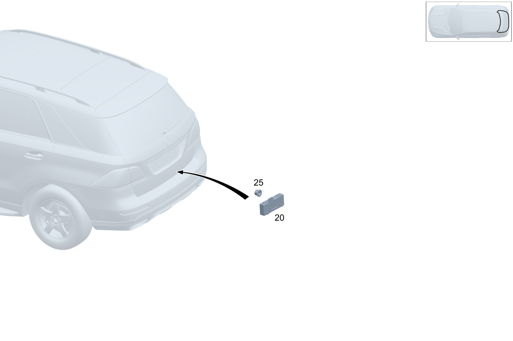

| № | Артикул | Название | Кол. | Примечание | Ограничение |
|---|---|---|---|---|---|
| 20 | A 167 900 83 07 | Блок управления (STEUERGERAET) | 1 | Дистанционная разблокировка крышки багажника [672] ДЕТАЛЬ ПОСЛЕ УСТАН.ПРОВЕРИТЬ НА АКТУАЛЬНОСТЬ "ПРОШИВНОГО" ПО [697] ДЕТАЛЬ ПОСТАВЛЯЕТСЯ ТОЛЬКО/ИЛИ ТАКЖЕ КАК ЗАП.ЧАСТЬ | 890 |
| 20 | A 167 900 50 13 | Блок управления (STEUERGERAET) | 1 | Дистанционная разблокировка крышки багажника [672] ДЕТАЛЬ ПОСЛЕ УСТАН.ПРОВЕРИТЬ НА АКТУАЛЬНОСТЬ "ПРОШИВНОГО" ПО [697] ДЕТАЛЬ ПОСТАВЛЯЕТСЯ ТОЛЬКО/ИЛИ ТАКЖЕ КАК ЗАП.ЧАСТЬ | 890 |
| 20 | A 167 900 50 13 | Блок управления (STEUERGERAET) | 1 | Дистанционная разблокировка крышки багажника [672] ДЕТАЛЬ ПОСЛЕ УСТАН.ПРОВЕРИТЬ НА АКТУАЛЬНОСТЬ "ПРОШИВНОГО" ПО [697] ДЕТАЛЬ ПОСТАВЛЯЕТСЯ ТОЛЬКО/ИЛИ ТАКЖЕ КАК ЗАП.ЧАСТЬ | (800+050/801)+890 |
| 20 | A 167 900 29 38 | Блок управления (STEUERGERAET) | 1 | Дистанционная разблокировка крышки багажника [672] ДЕТАЛЬ ПОСЛЕ УСТАН.ПРОВЕРИТЬ НА АКТУАЛЬНОСТЬ "ПРОШИВНОГО" ПО | (807/808)+890 |
| 20 | A 167 900 29 38 | Блок управления (STEUERGERAET) | 1 | Дистанционная разблокировка крышки багажника [672] ДЕТАЛЬ ПОСЛЕ УСТАН.ПРОВЕРИТЬ НА АКТУАЛЬНОСТЬ "ПРОШИВНОГО" ПО | (807)+890 |
| 25 | A 004 990 62 50 | Гайка с фланцем (SECHSKANTMUTTER M FLANSCH) | 1 | Крепление блоков управления; M6 | 890 |
| 100 | A 167 540 29 18 | Закр. блок предохр. (SICHERUNGSDOSE) | 1 | Задняя часть автомобиля слева | 490 |
| 100 | A 167 540 70 23 | Закр. блок предохр. (SICHERUNGSDOSE) | 1 | Задняя часть автомобиля слева | 465 |
| 110 | N 000000 008290 | Шестигранная гайка (SECHSKANTMUTTER) | 3 | Колесная арка сзади слева M6; M6 | 490/465 |
| 180 | A 167 545 28 01 | Держатель (HALTER) | 1 | Держатель блока управления | 810+(804/805/806) |
| 180 | A 167 545 28 01 | Держатель (HALTER) | 1 | Держатель блока управления | 810 |
| 180 | A 167 545 76 01 | Держатель (HALTER) | 1 | Держатель блока управления | 807/808/(807/808)+810 |
| 190 | N 000000 008272 | Гайка (MUTTER) | 1 | Крепление скобы; M6 | 810+(804/805/806) |
| 190 | N 000000 008272 | Гайка (MUTTER) | 1 | Крепление скобы; M6 | 810 |
| 190 | N 000000 008272 | Гайка (MUTTER) | 1 | Крепление скобы; M6 | 810 |
| 190 | N 000000 008272 | Гайка (MUTTER) | 4 | Крепление скобы; M6 | 810+(807/808/29X) |
| 210 | A 167 900 63 10 | Блок управления (STEUERGERAET) | 1 | Акустическая система [672] ДЕТАЛЬ ПОСЛЕ УСТАН.ПРОВЕРИТЬ НА АКТУАЛЬНОСТЬ "ПРОШИВНОГО" ПО | 810 |
| 210 | A 167 900 21 14 | Блок управления (STEUERGERAET) | 1 | Акустическая система [672] ДЕТАЛЬ ПОСЛЕ УСТАН.ПРОВЕРИТЬ НА АКТУАЛЬНОСТЬ "ПРОШИВНОГО" ПО | 810 |
| 210 | A 167 900 82 15 | Блок управления (STEUERGERAET) | 1 | Акустическая система [672] ДЕТАЛЬ ПОСЛЕ УСТАН.ПРОВЕРИТЬ НА АКТУАЛЬНОСТЬ "ПРОШИВНОГО" ПО [697] ДЕТАЛЬ ПОСТАВЛЯЕТСЯ ТОЛЬКО/ИЛИ ТАКЖЕ КАК ЗАП.ЧАСТЬ | 810 |
| 210 | A 177 900 09 06 | Блок управления (STEUERGERAET) | 1 | Акустическая система [672] ДЕТАЛЬ ПОСЛЕ УСТАН.ПРОВЕРИТЬ НА АКТУАЛЬНОСТЬ "ПРОШИВНОГО" ПО | (810/M177+772+810)+804 |
| 210 | A 177 900 94 15 | Блок управления (STEUERGERAET) | 1 | Акустическая система [672] ДЕТАЛЬ ПОСЛЕ УСТАН.ПРОВЕРИТЬ НА АКТУАЛЬНОСТЬ "ПРОШИВНОГО" ПО | 810/M177+772+810+(804/805/806) |
| 210 | A 177 900 94 15 | Блок управления (STEUERGERAET) | 1 | Акустическая система [672] ДЕТАЛЬ ПОСЛЕ УСТАН.ПРОВЕРИТЬ НА АКТУАЛЬНОСТЬ "ПРОШИВНОГО" ПО | 810/M177+772+810 |
| 210 | A 167 900 64 10 | Блок управления (STEUERGERAET) | 1 | Акустическая система [672] ДЕТАЛЬ ПОСЛЕ УСТАН.ПРОВЕРИТЬ НА АКТУАЛЬНОСТЬ "ПРОШИВНОГО" ПО | 811 |
| 210 | A 167 900 58 12 | Блок управления (STEUERGERAET) | 1 | Акустическая система [672] ДЕТАЛЬ ПОСЛЕ УСТАН.ПРОВЕРИТЬ НА АКТУАЛЬНОСТЬ "ПРОШИВНОГО" ПО | 811 |
| 210 | A 167 900 20 14 | Блок управления (STEUERGERAET) | 1 | Акустическая система [672] ДЕТАЛЬ ПОСЛЕ УСТАН.ПРОВЕРИТЬ НА АКТУАЛЬНОСТЬ "ПРОШИВНОГО" ПО [697] ДЕТАЛЬ ПОСТАВЛЯЕТСЯ ТОЛЬКО/ИЛИ ТАКЖЕ КАК ЗАП.ЧАСТЬ | 811 |
| 210 | A 167 900 95 18 | Блок управления (STEUERGERAET) | 1 | Акустическая система [672] ДЕТАЛЬ ПОСЛЕ УСТАН.ПРОВЕРИТЬ НА АКТУАЛЬНОСТЬ "ПРОШИВНОГО" ПО [697] ДЕТАЛЬ ПОСТАВЛЯЕТСЯ ТОЛЬКО/ИЛИ ТАКЖЕ КАК ЗАП.ЧАСТЬ | 811 |
| 210 | A 167 900 25 12 | Блок управления (STEUERGERAET) | 1 | Акустическая система [672] ДЕТАЛЬ ПОСЛЕ УСТАН.ПРОВЕРИТЬ НА АКТУАЛЬНОСТЬ "ПРОШИВНОГО" ПО [697] ДЕТАЛЬ ПОСТАВЛЯЕТСЯ ТОЛЬКО/ИЛИ ТАКЖЕ КАК ЗАП.ЧАСТЬ | (811/M177+772+811)+(804/805/806) |
| 210 | A 167 900 90 31 | Блок управления (STEUERGERAET) | 1 | Акустическая система [672] ДЕТАЛЬ ПОСЛЕ УСТАН.ПРОВЕРИТЬ НА АКТУАЛЬНОСТЬ "ПРОШИВНОГО" ПО [697] ДЕТАЛЬ ПОСТАВЛЯЕТСЯ ТОЛЬКО/ИЛИ ТАКЖЕ КАК ЗАП.ЧАСТЬ | 811/M177+772+811+(804/805/806) |
| 210 | A 167 900 90 31 | Блок управления (STEUERGERAET) | 1 | Акустическая система [672] ДЕТАЛЬ ПОСЛЕ УСТАН.ПРОВЕРИТЬ НА АКТУАЛЬНОСТЬ "ПРОШИВНОГО" ПО [697] ДЕТАЛЬ ПОСТАВЛЯЕТСЯ ТОЛЬКО/ИЛИ ТАКЖЕ КАК ЗАП.ЧАСТЬ | 811/M177+772+811 |
| 210 | A 177 900 18 04 | Блок управления (STEUERGERAET) | 1 | Акустическая система [672] ДЕТАЛЬ ПОСЛЕ УСТАН.ПРОВЕРИТЬ НА АКТУАЛЬНОСТЬ "ПРОШИВНОГО" ПО | (M177+772/M256+M016)+(810/810+800) |
| 210 | A 177 900 73 05 | Блок управления (STEUERGERAET) | 1 | Акустическая система [672] ДЕТАЛЬ ПОСЛЕ УСТАН.ПРОВЕРИТЬ НА АКТУАЛЬНОСТЬ "ПРОШИВНОГО" ПО [697] ДЕТАЛЬ ПОСТАВЛЯЕТСЯ ТОЛЬКО/ИЛИ ТАКЖЕ КАК ЗАП.ЧАСТЬ | (M177+772/M256+M016)+(810/810+800) |
| 210 | A 177 900 59 06 | Блок управления (STEUERGERAET) | 1 | Акустическая система [672] ДЕТАЛЬ ПОСЛЕ УСТАН.ПРОВЕРИТЬ НА АКТУАЛЬНОСТЬ "ПРОШИВНОГО" ПО | (M177+772/M256+M016)+(810/810+800) |
| 210 | A 177 900 73 05 | Блок управления (STEUERGERAET) | 1 | Акустическая система [672] ДЕТАЛЬ ПОСЛЕ УСТАН.ПРОВЕРИТЬ НА АКТУАЛЬНОСТЬ "ПРОШИВНОГО" ПО [697] ДЕТАЛЬ ПОСТАВЛЯЕТСЯ ТОЛЬКО/ИЛИ ТАКЖЕ КАК ЗАП.ЧАСТЬ | (M177+772/M256+M016)+(810/810+800) |
| 210 | A 177 900 00 07 | Блок управления (STEUERGERAET) | 1 | Акустическая система [672] ДЕТАЛЬ ПОСЛЕ УСТАН.ПРОВЕРИТЬ НА АКТУАЛЬНОСТЬ "ПРОШИВНОГО" ПО [697] ДЕТАЛЬ ПОСТАВЛЯЕТСЯ ТОЛЬКО/ИЛИ ТАКЖЕ КАК ЗАП.ЧАСТЬ | (M177+772/M256+M016)+(810/810+800) |
| 210 | A 167 900 21 24 | Блок управления (STEUERGERAET) | 1 | Акустическая система [672] ДЕТАЛЬ ПОСЛЕ УСТАН.ПРОВЕРИТЬ НА АКТУАЛЬНОСТЬ "ПРОШИВНОГО" ПО [697] ДЕТАЛЬ ПОСТАВЛЯЕТСЯ ТОЛЬКО/ИЛИ ТАКЖЕ КАК ЗАП.ЧАСТЬ | (M177+772/M256+M016)+810 |
| 210 | A 167 900 07 08 | Блок управления (STEUERGERAET) | 1 | Акустическая система [672] ДЕТАЛЬ ПОСЛЕ УСТАН.ПРОВЕРИТЬ НА АКТУАЛЬНОСТЬ "ПРОШИВНОГО" ПО | (M177+772/M256+M016)+(811/811+800) |
| 210 | A 167 900 65 09 | Блок управления (STEUERGERAET) | 1 | Акустическая система [672] ДЕТАЛЬ ПОСЛЕ УСТАН.ПРОВЕРИТЬ НА АКТУАЛЬНОСТЬ "ПРОШИВНОГО" ПО [697] ДЕТАЛЬ ПОСТАВЛЯЕТСЯ ТОЛЬКО/ИЛИ ТАКЖЕ КАК ЗАП.ЧАСТЬ | (M177+772/M256+M016)+(811/811+800) |
| 210 | A 167 900 98 14 | Блок управления | 1 | Акустическая система [672] ДЕТАЛЬ ПОСЛЕ УСТАН.ПРОВЕРИТЬ НА АКТУАЛЬНОСТЬ "ПРОШИВНОГО" ПО | (M177+772/M256+M016)+(811/811+800) |
| 210 | A 167 900 65 09 | Блок управления (STEUERGERAET) | 1 | Акустическая система [672] ДЕТАЛЬ ПОСЛЕ УСТАН.ПРОВЕРИТЬ НА АКТУАЛЬНОСТЬ "ПРОШИВНОГО" ПО [697] ДЕТАЛЬ ПОСТАВЛЯЕТСЯ ТОЛЬКО/ИЛИ ТАКЖЕ КАК ЗАП.ЧАСТЬ | (M177+772/M256+M016)+(811/811+800) |
| 210 | A 167 900 97 18 | Блок управления (STEUERGERAET) | 1 | Акустическая система [672] ДЕТАЛЬ ПОСЛЕ УСТАН.ПРОВЕРИТЬ НА АКТУАЛЬНОСТЬ "ПРОШИВНОГО" ПО [697] ДЕТАЛЬ ПОСТАВЛЯЕТСЯ ТОЛЬКО/ИЛИ ТАКЖЕ КАК ЗАП.ЧАСТЬ | (M177+772/M256+M016)+(811/811+800) |
| 210 | A 167 900 20 24 | Блок управления (STEUERGERAET) | 1 | Акустическая система [672] ДЕТАЛЬ ПОСЛЕ УСТАН.ПРОВЕРИТЬ НА АКТУАЛЬНОСТЬ "ПРОШИВНОГО" ПО [697] ДЕТАЛЬ ПОСТАВЛЯЕТСЯ ТОЛЬКО/ИЛИ ТАКЖЕ КАК ЗАП.ЧАСТЬ | (M177+772/M256+M016)+811 |
| 210 | A 223 900 77 41 | Блок управления | 1 | Акустическая система [672] ДЕТАЛЬ ПОСЛЕ УСТАН.ПРОВЕРИТЬ НА АКТУАЛЬНОСТЬ "ПРОШИВНОГО" ПО | 807/808 |
| 210 | A 223 900 87 46 | Блок управления (STEUERGERAET) | 1 | Акустическая система [672] ДЕТАЛЬ ПОСЛЕ УСТАН.ПРОВЕРИТЬ НА АКТУАЛЬНОСТЬ "ПРОШИВНОГО" ПО | 807/808/29X |
| 210 | A 223 900 43 49 | Блок управления (STEUERGERAET) | 1 | Акустическая система [672] ДЕТАЛЬ ПОСЛЕ УСТАН.ПРОВЕРИТЬ НА АКТУАЛЬНОСТЬ "ПРОШИВНОГО" ПО | 807/808/29X |
| 210 | A 223 900 89 46 | Блок управления (STEUERGERAET) | 1 | Акустическая система [672] ДЕТАЛЬ ПОСЛЕ УСТАН.ПРОВЕРИТЬ НА АКТУАЛЬНОСТЬ "ПРОШИВНОГО" ПО | 810+(807/808/29X) |
| 210 | A 223 900 45 49 | Блок управления (STEUERGERAET) | 1 | Акустическая система [672] ДЕТАЛЬ ПОСЛЕ УСТАН.ПРОВЕРИТЬ НА АКТУАЛЬНОСТЬ "ПРОШИВНОГО" ПО | 810+(807/808/29X) |
| 210 | A 223 900 91 46 | Блок управления (STEUERGERAET) | 1 | Акустическая система [672] ДЕТАЛЬ ПОСЛЕ УСТАН.ПРОВЕРИТЬ НА АКТУАЛЬНОСТЬ "ПРОШИВНОГО" ПО | 811+807 |
| 210 | A 223 900 47 49 | Блок управления (STEUERGERAET) | 1 | Акустическая система [672] ДЕТАЛЬ ПОСЛЕ УСТАН.ПРОВЕРИТЬ НА АКТУАЛЬНОСТЬ "ПРОШИВНОГО" ПО | 811+807 |
| 210 | A 223 900 47 49 | Блок управления (STEUERGERAET) | 1 | Акустическая система [672] ДЕТАЛЬ ПОСЛЕ УСТАН.ПРОВЕРИТЬ НА АКТУАЛЬНОСТЬ "ПРОШИВНОГО" ПО | 811+(807+057/808/29X) |
| 230 | N 000000 008890 | Винт с 6-гранной головкой (SECHSKANTSCHRAUBE) | 2 | Крепление блока управления; M6X16 | 807/808 |
| 240 | N 000000 008272 | Гайка (MUTTER) | 3 | Держатель к полу багажника; M6 | 810 |
| 240 | N 000000 008272 | Гайка (MUTTER) | 4 | Держатель к полу багажника; M6 | 811 |
| 240 | N 000000 008272 | Гайка (MUTTER) | 3 | Держатель к полу багажника; M6 | 810+(804/805/806) |
| 240 | N 000000 008272 | Гайка (MUTTER) | 3 | Держатель к полу багажника; M6 | 810 |
| 240 | N 000000 008272 | Гайка (MUTTER) | 4 | Держатель к полу багажника; M6 | 810+(807/808) |
| 240 | N 000000 008272 | Гайка (MUTTER) | 2 | Держатель к полу багажника; M6 | 807/808 |
| 240 | N 000000 008272 | Гайка (MUTTER) | 2 | Держатель к полу багажника; M6 | 807/808 |
| 240 | N 000000 008272 | Гайка (MUTTER) | 4 | Держатель к полу багажника; M6 | 811+(807/808) |
| 240 | N 000000 008272 | Гайка (MUTTER) | 4 | Держатель к полу багажника; M6 | 811+(807/808) |
| 260 | A 167 900 00 09 | Блок управления (STEUERGERAET) | 1 | 3\-й ряд сидений | 886 |
| 260 | A 167 900 35 28 | Блок управления | 1 | 3\-й ряд сидений [672] ДЕТАЛЬ ПОСЛЕ УСТАН.ПРОВЕРИТЬ НА АКТУАЛЬНОСТЬ "ПРОШИВНОГО" ПО | (807/808)+886 |
| 270 | A 167 540 78 24 | Держатель блока упр. (STEUERGERAETEHALTER) | 1 | Держатель к блоку управления | 886 |
| 270 | A 214 545 26 00 | Держатель (HALTER) | 1 | Держатель к блоку управления | (807/808)+886 |
| 275 | A 000 990 99 18 | Пластмассовая гайка откр. (KUNSTSTOFFMUTTER OFFEN) | 2 | Крепление держателя | (807/808)+886 |
| 275 | N 000000 008296 | ГАЙКА КОМБИНИРОВАННАЯ (KOMBIMUTTER) | 2 | Крепление держателя; M6 | (807/808)+886 |
| 470 | A 167 900 34 02 | Блок управления (STEUERGERAET) | 1 | Прицеп [672] ДЕТАЛЬ ПОСЛЕ УСТАН.ПРОВЕРИТЬ НА АКТУАЛЬНОСТЬ "ПРОШИВНОГО" ПО [697] ДЕТАЛЬ ПОСТАВЛЯЕТСЯ ТОЛЬКО/ИЛИ ТАКЖЕ КАК ЗАП.ЧАСТЬ | 550/553 |
| 470 | A 167 900 33 02 | Блок управления (STEUERGERAET) | 1 | Прицеп [672] ДЕТАЛЬ ПОСЛЕ УСТАН.ПРОВЕРИТЬ НА АКТУАЛЬНОСТЬ "ПРОШИВНОГО" ПО | 550+(494/460/496/625) |
| 470 | A 167 900 25 04 | Блок управления (STEUERGERAET) | 1 | Прицеп [672] ДЕТАЛЬ ПОСЛЕ УСТАН.ПРОВЕРИТЬ НА АКТУАЛЬНОСТЬ "ПРОШИВНОГО" ПО [697] ДЕТАЛЬ ПОСТАВЛЯЕТСЯ ТОЛЬКО/ИЛИ ТАКЖЕ КАК ЗАП.ЧАСТЬ | 800+550+(494/460/496/625) |
| 470 | A 167 900 25 04 | Блок управления (STEUERGERAET) | 1 | Прицеп [672] ДЕТАЛЬ ПОСЛЕ УСТАН.ПРОВЕРИТЬ НА АКТУАЛЬНОСТЬ "ПРОШИВНОГО" ПО [697] ДЕТАЛЬ ПОСТАВЛЯЕТСЯ ТОЛЬКО/ИЛИ ТАКЖЕ КАК ЗАП.ЧАСТЬ | 550+(494/460/496/625) |
| 470 | A 167 900 26 04 | Блок управления (STEUERGERAET) | 1 | Прицеп [672] ДЕТАЛЬ ПОСЛЕ УСТАН.ПРОВЕРИТЬ НА АКТУАЛЬНОСТЬ "ПРОШИВНОГО" ПО | 800+(550/553) |
| 470 | A 167 900 26 04 | Блок управления (STEUERGERAET) | 1 | Прицеп [672] ДЕТАЛЬ ПОСЛЕ УСТАН.ПРОВЕРИТЬ НА АКТУАЛЬНОСТЬ "ПРОШИВНОГО" ПО | (550/553) |
| 470 | A 167 900 12 09 | Блок управления (STEUERGERAET) | 1 | Прицеп [672] ДЕТАЛЬ ПОСЛЕ УСТАН.ПРОВЕРИТЬ НА АКТУАЛЬНОСТЬ "ПРОШИВНОГО" ПО [697] ДЕТАЛЬ ПОСТАВЛЯЕТСЯ ТОЛЬКО/ИЛИ ТАКЖЕ КАК ЗАП.ЧАСТЬ | ((800+050)/801/802/803)+550+(494/460/496/625) |
| 470 | A 167 900 12 09 | Блок управления (STEUERGERAET) | 1 | Прицеп [672] ДЕТАЛЬ ПОСЛЕ УСТАН.ПРОВЕРИТЬ НА АКТУАЛЬНОСТЬ "ПРОШИВНОГО" ПО [697] ДЕТАЛЬ ПОСТАВЛЯЕТСЯ ТОЛЬКО/ИЛИ ТАКЖЕ КАК ЗАП.ЧАСТЬ | 550+(494/460/496/625) |
| 470 | A 167 900 12 09 | Блок управления (STEUERGERAET) | 1 | Прицеп [672] ДЕТАЛЬ ПОСЛЕ УСТАН.ПРОВЕРИТЬ НА АКТУАЛЬНОСТЬ "ПРОШИВНОГО" ПО [697] ДЕТАЛЬ ПОСТАВЛЯЕТСЯ ТОЛЬКО/ИЛИ ТАКЖЕ КАК ЗАП.ЧАСТЬ | (550/553)+(494/460/496/625) |
| 470 | A 167 900 12 09 | Блок управления (STEUERGERAET) | 1 | Прицеп [672] ДЕТАЛЬ ПОСЛЕ УСТАН.ПРОВЕРИТЬ НА АКТУАЛЬНОСТЬ "ПРОШИВНОГО" ПО [697] ДЕТАЛЬ ПОСТАВЛЯЕТСЯ ТОЛЬКО/ИЛИ ТАКЖЕ КАК ЗАП.ЧАСТЬ | (550/553)+(494/460/496/625/834) |
| 470 | A 167 900 13 09 | Блок управления (STEUERGERAET) | 1 | Прицеп [672] ДЕТАЛЬ ПОСЛЕ УСТАН.ПРОВЕРИТЬ НА АКТУАЛЬНОСТЬ "ПРОШИВНОГО" ПО [697] ДЕТАЛЬ ПОСТАВЛЯЕТСЯ ТОЛЬКО/ИЛИ ТАКЖЕ КАК ЗАП.ЧАСТЬ | ((800+050)/801/802/803)+(550/553) |
| 470 | A 167 900 13 09 | Блок управления (STEUERGERAET) | 1 | Прицеп [672] ДЕТАЛЬ ПОСЛЕ УСТАН.ПРОВЕРИТЬ НА АКТУАЛЬНОСТЬ "ПРОШИВНОГО" ПО [697] ДЕТАЛЬ ПОСТАВЛЯЕТСЯ ТОЛЬКО/ИЛИ ТАКЖЕ КАК ЗАП.ЧАСТЬ | (550/553) |
| 470 | A 223 900 68 27 | Блок управления (STEUERGERAET) | 1 | Прицеп [672] ДЕТАЛЬ ПОСЛЕ УСТАН.ПРОВЕРИТЬ НА АКТУАЛЬНОСТЬ "ПРОШИВНОГО" ПО | 550+(006P/127/(806+056)/807) |
| 470 | A 223 900 61 35 | Блок управления (STEUERGERAET) | 1 | Прицеп [672] ДЕТАЛЬ ПОСЛЕ УСТАН.ПРОВЕРИТЬ НА АКТУАЛЬНОСТЬ "ПРОШИВНОГО" ПО | 550+(006P/127/807/808) |
| 470 | A 223 900 61 35 | Блок управления (STEUERGERAET) | 1 | Прицеп [672] ДЕТАЛЬ ПОСЛЕ УСТАН.ПРОВЕРИТЬ НА АКТУАЛЬНОСТЬ "ПРОШИВНОГО" ПО | 550+(807/808) |
| 470 | A 223 900 25 42 | Блок управления (STEUERGERAET) | 1 | Прицеп [672] ДЕТАЛЬ ПОСЛЕ УСТАН.ПРОВЕРИТЬ НА АКТУАЛЬНОСТЬ "ПРОШИВНОГО" ПО | 550+(807/808) |
| 470 | A 223 900 67 27 | Блок управления (STEUERGERAET) | 1 | Прицеп [672] ДЕТАЛЬ ПОСЛЕ УСТАН.ПРОВЕРИТЬ НА АКТУАЛЬНОСТЬ "ПРОШИВНОГО" ПО | 550+(460/494/496/625/834)+(006P/127/(806+056)/807) |
| 470 | A 223 900 62 35 | Блок управления (STEUERGERAET) | 1 | Прицеп [672] ДЕТАЛЬ ПОСЛЕ УСТАН.ПРОВЕРИТЬ НА АКТУАЛЬНОСТЬ "ПРОШИВНОГО" ПО | 550+(460/494/496/625/834)+(006P/127/807/808) |
| 470 | A 223 900 62 35 | Блок управления (STEUERGERAET) | 1 | Прицеп [672] ДЕТАЛЬ ПОСЛЕ УСТАН.ПРОВЕРИТЬ НА АКТУАЛЬНОСТЬ "ПРОШИВНОГО" ПО | 550+(460/494/496/625/834)+(807/808) |
| 470 | A 223 900 26 42 | Блок управления (STEUERGERAET) | 1 | Прицеп [672] ДЕТАЛЬ ПОСЛЕ УСТАН.ПРОВЕРИТЬ НА АКТУАЛЬНОСТЬ "ПРОШИВНОГО" ПО | 550+(460/494/496/625/834)+(807/808) |
| 480 | N 000000 008290 | Шестигранная гайка (SECHSKANTMUTTER) | 2 | КОЛЁСНАЯ АРКА (ЗАДНЯЯ ПРАВАЯ); M6 | 550/553 |
| 480 | N 000000 008290 | Шестигранная гайка (SECHSKANTMUTTER) | 2 | КОЛЁСНАЯ АРКА (ЗАДНЯЯ ПРАВАЯ); M6 | 550/553 |
| 500 | A 296 900 80 16 | Блок управления | 1 | Модуль обработки сигналов и управления, в задней части салона [672] ДЕТАЛЬ ПОСЛЕ УСТАН.ПРОВЕРИТЬ НА АКТУАЛЬНОСТЬ "ПРОШИВНОГО" ПО | (807/808) |
| 500 | A 296 900 13 17 | Блок управления (STEUERGERAET) | 1 | Модуль обработки сигналов и управления, в задней части салона [672] ДЕТАЛЬ ПОСЛЕ УСТАН.ПРОВЕРИТЬ НА АКТУАЛЬНОСТЬ "ПРОШИВНОГО" ПО | (807/808) |
| 500 | A 167 900 56 07 | Блок управления (STEUERGERAET) | 1 | Модуль обработки сигналов и управления, в задней части салона [672] ДЕТАЛЬ ПОСЛЕ УСТАН.ПРОВЕРИТЬ НА АКТУАЛЬНОСТЬ "ПРОШИВНОГО" ПО [697] ДЕТАЛЬ ПОСТАВЛЯЕТСЯ ТОЛЬКО/ИЛИ ТАКЖЕ КАК ЗАП.ЧАСТЬ | |
| 500 | A 167 900 73 11 | Блок управления (STEUERGERAET) | 1 | Модуль обработки сигналов и управления, в задней части салона [672] ДЕТАЛЬ ПОСЛЕ УСТАН.ПРОВЕРИТЬ НА АКТУАЛЬНОСТЬ "ПРОШИВНОГО" ПО [697] ДЕТАЛЬ ПОСТАВЛЯЕТСЯ ТОЛЬКО/ИЛИ ТАКЖЕ КАК ЗАП.ЧАСТЬ | |
| 500 | A 167 900 04 14 | Блок управления (STEUERGERAET) | 1 | Модуль обработки сигналов и управления, в задней части салона [672] ДЕТАЛЬ ПОСЛЕ УСТАН.ПРОВЕРИТЬ НА АКТУАЛЬНОСТЬ "ПРОШИВНОГО" ПО [697] ДЕТАЛЬ ПОСТАВЛЯЕТСЯ ТОЛЬКО/ИЛИ ТАКЖЕ КАК ЗАП.ЧАСТЬ | |
| 500 | A 167 900 03 29 | Блок управления (STEUERGERAET) | 1 | Модуль обработки сигналов и управления, в задней части салона [672] ДЕТАЛЬ ПОСЛЕ УСТАН.ПРОВЕРИТЬ НА АКТУАЛЬНОСТЬ "ПРОШИВНОГО" ПО | 804/805/806 |
| 500 | A 167 900 03 29 | Блок управления (STEUERGERAET) | 1 | Модуль обработки сигналов и управления, в задней части салона [672] ДЕТАЛЬ ПОСЛЕ УСТАН.ПРОВЕРИТЬ НА АКТУАЛЬНОСТЬ "ПРОШИВНОГО" ПО | |
| 500 | A 167 900 16 20 | Блок управления (STEUERGERAET) | 1 | Модуль обработки сигналов и управления, в задней части салона [672] ДЕТАЛЬ ПОСЛЕ УСТАН.ПРОВЕРИТЬ НА АКТУАЛЬНОСТЬ "ПРОШИВНОГО" ПО [697] ДЕТАЛЬ ПОСТАВЛЯЕТСЯ ТОЛЬКО/ИЛИ ТАКЖЕ КАК ЗАП.ЧАСТЬ | 802 |
| 500 | A 167 900 04 14 | Блок управления (STEUERGERAET) | 1 | Модуль обработки сигналов и управления, в задней части салона [672] ДЕТАЛЬ ПОСЛЕ УСТАН.ПРОВЕРИТЬ НА АКТУАЛЬНОСТЬ "ПРОШИВНОГО" ПО [697] ДЕТАЛЬ ПОСТАВЛЯЕТСЯ ТОЛЬКО/ИЛИ ТАКЖЕ КАК ЗАП.ЧАСТЬ | 802 |
| 500 | A 167 900 35 24 | Блок управления (STEUERGERAET) | 1 | Модуль обработки сигналов и управления, в задней части салона [672] ДЕТАЛЬ ПОСЛЕ УСТАН.ПРОВЕРИТЬ НА АКТУАЛЬНОСТЬ "ПРОШИВНОГО" ПО [697] ДЕТАЛЬ ПОСТАВЛЯЕТСЯ ТОЛЬКО/ИЛИ ТАКЖЕ КАК ЗАП.ЧАСТЬ | |
| 500 | A 167 900 03 29 | Блок управления (STEUERGERAET) | 1 | Модуль обработки сигналов и управления, в задней части салона [672] ДЕТАЛЬ ПОСЛЕ УСТАН.ПРОВЕРИТЬ НА АКТУАЛЬНОСТЬ "ПРОШИВНОГО" ПО | |
| 500 | A 167 900 35 24 | Блок управления (STEUERGERAET) | 1 | Модуль обработки сигналов и управления, в задней части салона [672] ДЕТАЛЬ ПОСЛЕ УСТАН.ПРОВЕРИТЬ НА АКТУАЛЬНОСТЬ "ПРОШИВНОГО" ПО [697] ДЕТАЛЬ ПОСТАВЛЯЕТСЯ ТОЛЬКО/ИЛИ ТАКЖЕ КАК ЗАП.ЧАСТЬ | 803 |
| 510 | A 167 545 65 00 | Держатель (HALTER) | 1 | Справа сзади | |
| 510 | A 167 545 65 01 | Держатель (HALTER) | 1 | Справа сзади | 807/808 |
| 520 | N 000000 008293 | ГАЙКА КОМБИНИРОВАННАЯ (KOMBIMUTTER) | 3 | Держатель к колесной арке сзади справа; M6 | |
| 520 | N 000000 008296 | ГАЙКА КОМБИНИРОВАННАЯ (KOMBIMUTTER) | 3 | Держатель к колесной арке сзади справа; M6 | |
| 660 | A 167 906 32 03 | Блок реле (RELAISEINHEIT) | 1 | Блок предохранителей и реле (SRB), неукомплектованный | |
| 660 | A 167 906 32 03 | Блок реле (RELAISEINHEIT) | 1 | Блок предохранителей и реле (SRB), неукомплектованный | 807/808/29X |
| 665 | A 003 542 04 19 | - Реле (RELAIS) | 1 | Позиция штекера: Y | |
| 665 | A 003 542 16 19 | - Реле (RELAIS) | 1 | Позиция штекера: T | |
| 665 | A 000 982 19 23 | - Реле (RELAIS) | 1 | Позиция штекера: S, U, X | |
| 680 | N 000000 007648 | Плавкая вставка (SICHERUNGSEINSATZ) | 1 | В закрытый блок предохранителей MINI; C\-5A\-S | |
| 680 | N 000000 008698 | Плавкая вставка (SICHERUNGSEINSATZ) | 1 | В закрытый блок предохранителей MINI; \-C\-5\-E | |
| 680 | N 000000 007649 | Плавкая вставка (SICHERUNGSEINSATZ) | 1 | В закрытый блок предохранителей MINI; C\-7,5A\-S | |
| 680 | N 000000 008699 | Плавкая вставка (SICHERUNGSEINSATZ) | 1 | В закрытый блок предохранителей MINI; C\-7,5\-E | |
| 680 | N 000000 007650 | Плавкая вставка (SICHERUNGSEINSATZ) | 1 | В закрытый блок предохранителей MINI; C\-10A\-S | |
| 680 | N 000000 008700 | Плавкая вставка (SICHERUNGSEINSATZ) | 1 | В закрытый блок предохранителей MINI; C\-10\-E | |
| 680 | N 000000 007651 | Плавкая вставка (SICHERUNGSEINSATZ) | 1 | В закрытый блок предохранителей MINI; C\-15A\-S | |
| 680 | N 000000 008701 | Плавкая вставка (SICHERUNGSEINSATZ) | 1 | В закрытый блок предохранителей MINI; C\-15\-E | |
| 680 | N 000000 007652 | Плавкая вставка (SICHERUNGSEINSATZ) | 1 | В закрытый блок предохранителей MINI; C\-20A\-S | |
| 680 | N 000000 008702 | Плавкая вставка (SICHERUNGSEINSATZ) | 1 | В закрытый блок предохранителей MINI; C\-20\-E | |
| 680 | N 000000 007653 | Плавкая вставка (SICHERUNGSEINSATZ) | 1 | В закрытый блок предохранителей MINI; C\-25A\-S | |
| 680 | N 000000 008703 | Плавкая вставка (SICHERUNGSEINSATZ) | 1 | В закрытый блок предохранителей MINI; C\-25\-E | |
| 680 | N 000000 007654 | Плавкая вставка (SICHERUNGSEINSATZ) | 1 | В закрытый блок предохранителей MINI; C\-30A\-S | |
| 680 | N 000000 008704 | Плавкая вставка (SICHERUNGSEINSATZ) | 1 | В закрытый блок предохранителей MINI; C\-30\-E | |
| 680 | N 000000 007659 | Плавкая вставка (SICHERUNGSEINSATZ) | 1 | В закрытый блок предохранителей MINI; E\-40A\-S | |
| 680 | N 000000 007660 | Плавкая вставка (SICHERUNGSEINSATZ) | 1 | В закрытый блок предохранителей MINI; E\-50A\-S | |
| 680 | N 000000 007664 | Плавкая вставка (SICHERUNGSEINSATZ) | 1 | В закрытый блок предохранителей MINI; F\-5A\-S | |
| 680 | N 000000 008708 | Плавкая вставка (SICHERUNGSEINSATZ) | 1 | В закрытый блок предохранителей MINI; \-F\-5\-E | |
| 680 | N 000000 007665 | Плавкая вставка (SICHERUNGSEINSATZ) | 1 | В закрытый блок предохранителей MINI; F\-7.5A\-S | |
| 680 | N 000000 008709 | Плавкая вставка (SICHERUNGSEINSATZ) | 1 | В закрытый блок предохранителей MINI; F\-7,5\-E | |
| 680 | N 000000 007666 | Плавкая вставка (SICHERUNGSEINSATZ) | 1 | В закрытый блок предохранителей MINI; F\-10\-S | |
| 680 | N 000000 008710 | Плавкая вставка (SICHERUNGSEINSATZ) | 1 | В закрытый блок предохранителей MINI; F\-10\-E | |
| 680 | N 000000 007667 | Плавкая вставка (SICHERUNGSEINSATZ) | 1 | В закрытый блок предохранителей MINI; F\-15\-S | |
| 680 | N 000000 008711 | Плавкая вставка (SICHERUNGSEINSATZ) | 1 | В закрытый блок предохранителей MINI; F\-15\-E | |
| 680 | N 000000 004202 | Плавкая вставка (SICHERUNGSEINSATZ) | 1 | В закрытый блок предохранителей; C\-5 | 830+943 |
| 685 | A 167 546 64 01 | - Удерживающая пластина (HALTEPLATTE) | 1 | Блок предохранителей и реле сзади | |
| 690 | A 167 545 39 00 | Держатель (HALTER) | 1 | БЛОК РЕЛЕ | |
| 700 | N 000000 003648 | Винт с 6-гр. глвк (SECHSRUNDSCHRAUBE) | 1 | Блок предохранителей и реле; M6X25 | |
| 750 | A 167 900 05 00 | Блок управления (STEUERGERAET) | 1 | Подогрев сидений в задней части салона [697] ДЕТАЛЬ ПОСТАВЛЯЕТСЯ ТОЛЬКО/ИЛИ ТАКЖЕ КАК ЗАП.ЧАСТЬ | 872 |
| 750 | A 167 900 88 12 | Блок управления (STEUERGERAET) | 1 | Подогрев сидений в задней части салона [697] ДЕТАЛЬ ПОСТАВЛЯЕТСЯ ТОЛЬКО/ИЛИ ТАКЖЕ КАК ЗАП.ЧАСТЬ | 872 |
| 750 | A 167 900 59 08 | Блок управления (STEUERGERAET) | 1 | Подогрев сидений в задней части салона [672] ДЕТАЛЬ ПОСЛЕ УСТАН.ПРОВЕРИТЬ НА АКТУАЛЬНОСТЬ "ПРОШИВНОГО" ПО [697] ДЕТАЛЬ ПОСТАВЛЯЕТСЯ ТОЛЬКО/ИЛИ ТАКЖЕ КАК ЗАП.ЧАСТЬ | (800+050)+872 |
| 750 | A 167 900 88 12 | Блок управления (STEUERGERAET) | 1 | Подогрев сидений в задней части салона [697] ДЕТАЛЬ ПОСТАВЛЯЕТСЯ ТОЛЬКО/ИЛИ ТАКЖЕ КАК ЗАП.ЧАСТЬ | (800+050/801)+872 |
| 750 | A 247 900 17 00 | Блок управления (STEUERGERAET) | 1 | Подогрев сидений в задней части салона | 402 |
| 750 | A 247 900 47 09 | Блок управления (STEUERGERAET) | 1 | Подогрев сидений в задней части салона [697] ДЕТАЛЬ ПОСТАВЛЯЕТСЯ ТОЛЬКО/ИЛИ ТАКЖЕ КАК ЗАП.ЧАСТЬ | 402 |
| 750 | A 247 900 88 06 | Блок управления (STEUERGERAET) | 1 | Подогрев сидений в задней части салона [672] ДЕТАЛЬ ПОСЛЕ УСТАН.ПРОВЕРИТЬ НА АКТУАЛЬНОСТЬ "ПРОШИВНОГО" ПО | (800+050)+402 |
| 750 | A 247 900 47 09 | Блок управления (STEUERGERAET) | 1 | Подогрев сидений в задней части салона [697] ДЕТАЛЬ ПОСТАВЛЯЕТСЯ ТОЛЬКО/ИЛИ ТАКЖЕ КАК ЗАП.ЧАСТЬ | (800+050/801)+402 |
| 750 | A 247 900 03 14 | Блок управления (STEUERGERAET) | 1 | Подогрев сидений в задней части салона | (804/805/806)+402 |
| 750 | A 247 900 03 14 | Блок управления (STEUERGERAET) | 1 | Подогрев сидений в задней части салона | 402 |
| 750 | A 167 900 33 20 | Блок управления (STEUERGERAET) | 1 | Подогрев сидений в задней части салона | (804/805/806)+872 |
| 750 | A 167 900 33 20 | Блок управления (STEUERGERAET) | 1 | Подогрев сидений в задней части салона | 872 |
| 850 | A 290 900 28 01 | Блок управления (STEUERGERAET) | 1 | Блокировка дифференциала [697] ДЕТАЛЬ ПОСТАВЛЯЕТСЯ ТОЛЬКО/ИЛИ ТАКЖЕ КАК ЗАП.ЧАСТЬ | 467 |
| 850 | A 000 900 60 35 | Блок управления | 1 | Блокировка дифференциала [672] ДЕТАЛЬ ПОСЛЕ УСТАН.ПРОВЕРИТЬ НА АКТУАЛЬНОСТЬ "ПРОШИВНОГО" ПО | 802+(466/467) |
| 850 | A 000 900 60 35 | Блок управления | 1 | Блокировка дифференциала [672] ДЕТАЛЬ ПОСЛЕ УСТАН.ПРОВЕРИТЬ НА АКТУАЛЬНОСТЬ "ПРОШИВНОГО" ПО | 466/467 |
| 850 | A 000 900 24 37 | Блок управления (STEUERGERAET) | 1 | Блокировка дифференциала [672] ДЕТАЛЬ ПОСЛЕ УСТАН.ПРОВЕРИТЬ НА АКТУАЛЬНОСТЬ "ПРОШИВНОГО" ПО | 466/467 |
| 850 | A 000 900 00 51 | Блок управления | 1 | Блокировка дифференциала [672] ДЕТАЛЬ ПОСЛЕ УСТАН.ПРОВЕРИТЬ НА АКТУАЛЬНОСТЬ "ПРОШИВНОГО" ПО | 1U2+(466/467) |
| 860 | A 167 646 53 00 | Держатель (HALTER) | 1 | Держатель блока управления | M177+772 |
| 890 | A 000 900 46 13 | Блок управления (STEUERGERAET) | 1 | Система нейтрализации ОГ [672] ДЕТАЛЬ ПОСЛЕ УСТАН.ПРОВЕРИТЬ НА АКТУАЛЬНОСТЬ "ПРОШИВНОГО" ПО [697] ДЕТАЛЬ ПОСТАВЛЯЕТСЯ ТОЛЬКО/ИЛИ ТАКЖЕ КАК ЗАП.ЧАСТЬ | U79 |
| 890 | A 000 900 46 13 | Блок управления (STEUERGERAET) | 1 | Система нейтрализации ОГ [672] ДЕТАЛЬ ПОСЛЕ УСТАН.ПРОВЕРИТЬ НА АКТУАЛЬНОСТЬ "ПРОШИВНОГО" ПО [697] ДЕТАЛЬ ПОСТАВЛЯЕТСЯ ТОЛЬКО/ИЛИ ТАКЖЕ КАК ЗАП.ЧАСТЬ | U79+0O0 |
| 890 | A 000 900 15 19 | Блок управления (STEUERGERAET) | 1 | Система нейтрализации ОГ [672] ДЕТАЛЬ ПОСЛЕ УСТАН.ПРОВЕРИТЬ НА АКТУАЛЬНОСТЬ "ПРОШИВНОГО" ПО | 6U7 |
| 890 | A 000 900 82 33 | Блок управления (STEUERGERAET) | 1 | Система нейтрализации ОГ [672] ДЕТАЛЬ ПОСЛЕ УСТАН.ПРОВЕРИТЬ НА АКТУАЛЬНОСТЬ "ПРОШИВНОГО" ПО | 6U7 |
| 900 | A 167 545 16 01 | Держатель (HALTER) | 1 | Держатель | U79/U68/811/M177+772 |
| 900 | A 167 545 16 01 | Держатель (HALTER) | 1 | Держатель | 6U7/U79/U68/811/M177+772 |
| 910 | N 000000 008290 | Шестигранная гайка (SECHSKANTMUTTER) | 2 | КРЕПЛЕНИЕ БЛОКА УПРАВЛЕНИЯ; M6 | 467 |
| 910 | N 000000 008293 | ГАЙКА КОМБИНИРОВАННАЯ (KOMBIMUTTER) | 3 | Крепление скобы; M6 | (802/803)+(466/467) |
| 910 | N 000000 008293 | ГАЙКА КОМБИНИРОВАННАЯ (KOMBIMUTTER) | 3 | Крепление скобы; M6 | 466/467 |
| 920 | A 167 827 02 00 | Усилитель Hi-Fi (VERSTAERKER HI-FI-SYSTEM) | 1 | Акустическая система | 811 |
| 920 | A 223 905 82 02 | Усилитель Hi-Fi (VERSTAERKER HI-FI-SYSTEM) | 1 | Акустическая система | 811+804 |
| 920 | A 223 905 82 02 | Усилитель Hi-Fi (VERSTAERKER HI-FI-SYSTEM) | 1 | Акустическая система | 811 |
| 920 | A 223 905 82 02 | Усилитель Hi-Fi (VERSTAERKER HI-FI-SYSTEM) | 1 | Акустическая система | 811+(804/805/806/806+056) |
| 920 | A 223 905 12 12 | Усилитель Hi-Fi (VERSTAERKER HI-FI-SYSTEM) | 1 | Акустическая система | 811+(804+054/805/806/806+056) |
| 920 | A 223 905 12 12 | Усилитель Hi-Fi (VERSTAERKER HI-FI-SYSTEM) | 1 | Акустическая система | 811 |
| 925 | N 910143 006002 | Винт с 6-гр. глвк (SECHSRUNDSCHRAUBE) | 3 | Усилитель к держателю; M6X20 | 811/811+(807/808/29X) |
| 930 | N 000000 008272 | Гайка (MUTTER) | 3 | Усилитель к держателю; M6 | 811+M036 |
| 950 | A 167 900 17 04 | Блок управления | 1 | Звукогенератор (задний) [672] ДЕТАЛЬ ПОСЛЕ УСТАН.ПРОВЕРИТЬ НА АКТУАЛЬНОСТЬ "ПРОШИВНОГО" ПО | (M176/M256/M264/M654/M656)+U68 |
| 960 | N 910105 005000 | Винт с 6-гранной головкой (SECHSKANTSCHRAUBE) | 2 | Крепление блока управления; M5X12 | (M176/M256/M264/M654/M656)+U68 |
| 980 | A 177 905 04 03 | Усилитель Hi-Fi (VERSTAERKER HI-FI-SYSTEM) | 1 | Акустическая система | M256+M016/M177+772 |
| 990 | N 910105 005000 | Винт с 6-гранной головкой (SECHSKANTSCHRAUBE) | 3 | Усилитель к держателю; M5X12 | M256+M016/M177+772 |
Позиций: 175 · подписано на схемах: 175 · колесо — плавный зум в курсор, перетаскивание — пан, двойной клик — зум, клик по артикулу — скопировать · наведите на строку или цифру на схеме — подсветка связки, клик — закрепить.